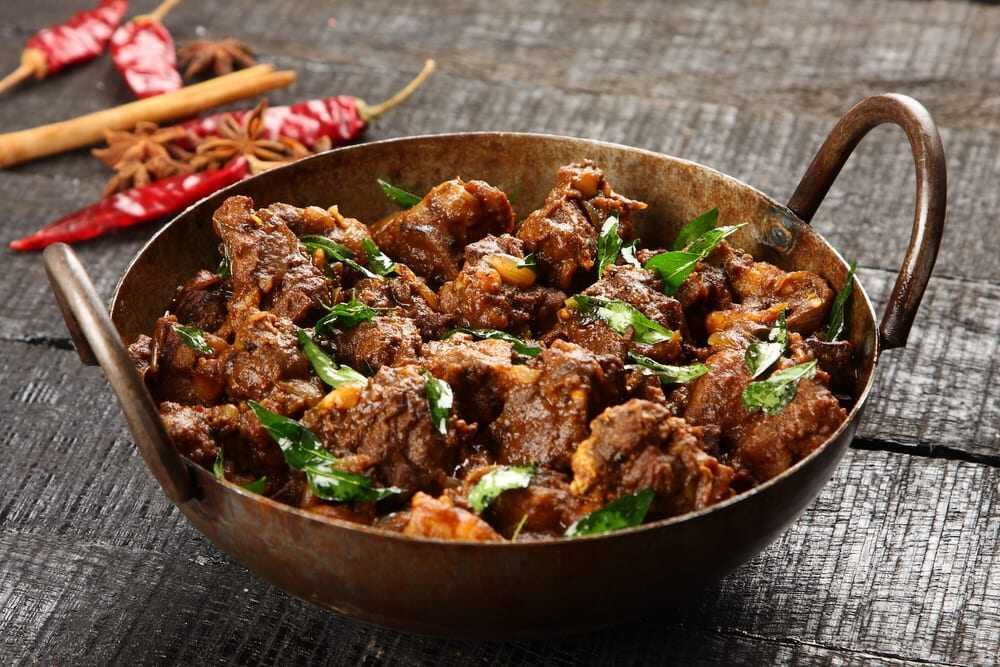

Beef Curry

Description
Kerala Beef Curry is an all-time favorite beef dish among Malayalees. Beef dishes are very popular in Kerala
Cuisine with
spicy masalas and awesome flavors. In Kerala you can consume beef without any inhibition. In
Kerala, at present you find
no strict norms against killing of animals for meat. Spicy beef dishes are
available almost everywhere from star rated hotels
to roadside shacks. Festivals like Easter and Christmas
are never complete without beef curry dishes. Preparation of beef
curry dishes vary from region to region
but all areas have their own unique and tasty beef preparations. Nadan Beef Curry
is one such delicacy that
goes well with appam, puttu, tapioca, chappati and rice. Kerala Beef Curry is a much coveted dish
especially in toddy shops across Kerala known as Beef Shappu Curry. Tapioca is very economical in God's Own
Country and
you will discover 'Kappa With Beef Curry' being sold as a hot favorite.
Ingredients
- 1 kg Beef
- 8 nos Dry red chillies (Kollamulaku)
- 3 tsp Coriander seeds
- 1 tsp Black pepper
- 2 pieces Cinnamon(small) (Karugapatta)
- 6 nos Cloves Grambu
- 1 tsp Fennel seeds (Perinjeerakam)
- 1 cup Pearl onions (Kunjulli)
- 2 nos Onions big
- 10 nos Garlic pods small
- 1 big Ginger
- 2 nos Green chillies
- 2 nos Tomatoes
- 1/2 tsp Turmeric powder
- Coconut oil As required
- Salt As required
- 1 stem Curry leaves
- 2 stem Coriander leaves
Steps
- Heat oil in a frying pan.
- Fry the dry red chillies and keep aside.
- Fry coriander seeds, till its aroma comes out and keep aside.
- Fry black pepper, cinnamon sticks, cloves and cumin seeds together and set aside.
- Stir fry pearl onions, till they turn brown.
- Blend all these fried ingredients in a mixer grinder.
- Pressure cook chopped beef with turmeric powder, salt and the blended mixture.
- Stir fry onions in the pan, till brown followed by green chillies, crushed garlic and ginger and chopped
tomatoes.
- Add these to the cooked beef and boil well.
- When the curry turns brown, turn off the flame.
- Garnish Nadan Beef Curry with curry leaves, coriander leaves and a spoon of coconut oil.
- Serve the Kerala Nadan Beef Curry with parotta or chapathi or rice or tapioca.